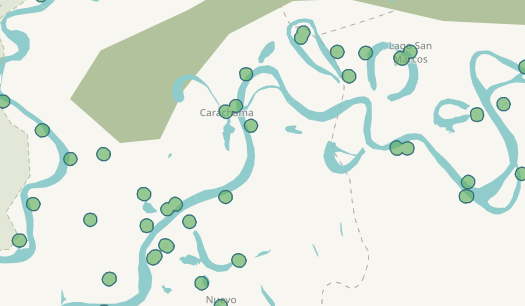
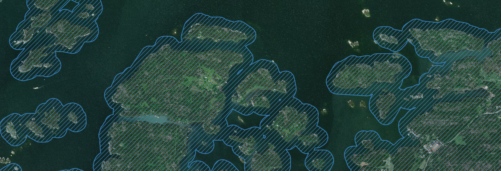

7.4 QGIS Workflows for Disaster Mapping
In this section covers practical data processing and analysis methods for activation size-up, planning projects, and managing ongoing projects. While these workflows are described using recent versions of QGIS, they are are typically general enough to perform in any modern GIS application (Python, R, Grass, ArcGIS etc.). This section assumes you familiar with the basic use of (HOT Export Tool](https://export.hotosm.org), (Overpass turbo)[https://overpass-turbo.eu/], and (QGIS)[https://qgis.org].
Useful QGIS plugins
Installing the QuickMapServices ,Quick OSM, and OSMDownloader will make handling OSM data in QGIS more convenient.
- QuickMapServices provides TMS raster tile basemaps, including OSM tiles, Bing, Digital Globe, and ERSI World satellite imagery, which is are common imagery sources used in for JOSM and iD
- Quick OSM has a useful JOSM Remote feature, which uses the JSOM remote control to set the editing area to match the current QGIS canvas area.
- Quick OSM can query overpass turbo with a very simple interface. This is useful for downloading OSM data for validation/analysis for a large area.
- OSMDownloader allows downloading data from the OSM database into .osm files from QGIS by simple rectangle selection. QuickOSM is often more convenient
When QuickOSM or OSMDownloader fail to download large datasets, use the HOT Export Tool via a browser.
A Note on File Formats and Projections (CRS)
It’s convenient to save small datasets as EPSG:4326 (WGS84) projected geojson files when working with HOTOSM tools. Many tools used by HOTOSM are web-based, and use EPSG:4326 projected geojson as the input and output format. QGIS itself can deal with most GIS file formats and CRS mostly automatically.
Use EPSG:3857 (Pseudo-Mercator) as the project CRS in QGIS. EPSG:3857 is the default projection of OSM. It’s coordinate unit is meters instead of degrees, making it more suitable for the kind of analysis discussed here. Most OSM tile sets and satellite imagery in published as TMS also use this CRS.
Recommended file formats for different tools and uses:
| Tool | Intended use | File Format | CRS |
|---|---|---|---|
| Export Tool | Export AOI extent: file shall have one layer with one polygon only. | Geojson | EPSG:4326 (WGS 84) |
| Tasking Manager | Project task definition file: one polygon layer, each polygon can be used as and individual project task, or TM can automatically split polygons into gridded task squares | Geojson | EPSG:4326 (WGS 84) |
| uMap | Data displayed in uMap may have arbitrary geometry and attribute data | Geojson | EPSG:4326 (WGS 84) |
| JOSM | Non-editable “gps” tracks: Point or line geometry. Deselect all attribute data fields when exporting from QGIS | GPX | EPSG:4326 (WGS 84) |
Preparing a TM projects for many small villages
In areas where there are a large amounts of small dispersed villages, it can be effective to create individual tasks for the villages in the project instead of using the defaul gridded taks squares. This prevents mappers’ time being wasted searching through empty task squares.
The description below uses project #6061 – Peru remote villages as an example. It was a part of a sudden-onset activation after an earthquake. The point of using village-specific tasks is to cover a large are in a short amount of time.

Step 1. Estimate the locations of villages.
To make a project based on individual villages, you must first create a point layer with at least one point per village. In #6061 that layer was created using a point layer consisting of:
- OSM nodes tagged as “place"="village”, “place"="hamlet”
- OSM nodes tagged as “amenity"="school”
- Peru national data record hosted by GeoIDEP helped finding settlements with > 150 population
Often an OSM export of points where "place" is not NULL works well as a place to start. Choosing which tags to target is a manual process. In #6061 it was lucky that the location information of shools in Peru had already been imported to OSM. Many villages had no other mapping done (no buildings, roads etc.) except for one “amenity"="school” node.
Step 2. Building the Tasking Manager Project AOI.
- Reproject the points from step 1 to something suitable, such as EPSG:3857 (WGS 84 Pseudo Mercator), where the coordinate unit is meters instead of degrees. Vector > Data Management Tools > Reproject Layer
- Buffer points of interest by e.g 1 km. Choose a value suitable for the region you are working with. The idea is that the buffer covers the entire village. Vector > Geoprocessing Tools > Buffer
- Dissolve buffered areas so that overlapping areas are combined into one polygon. Vector > Geoprocessing Tools > Dissolve
- In the dissolve output, split any possible mulitpart polygons to singleparts. Vector > Geometry Tools > Multipart to Singleparts
- Export features to Geojson, making sure to use the CRS EPSG:4326 (WGS84). Right-click layer > Export > Save Features As
- Use the exported file as the task geometry in Tasking Manager.
In project #6061, the majority of small villages were able to fit inside the 500m buffer, but larger villages will extend beyond. Keep in mind that if the buffer is too large adjacent villages may end merging into one task that includes both villages. With a 1km buffer some villages still merged, but it was not an issue, mappers simply mapped both villages.
Drawbacks:
Mappers should be explicitly instructed to map outside the task area when needed since task are not adjacent. Some mappers will obey task the boundary, leaving the areas outside unmapped. Especially make sure validators are aware as well.
TM Projects for Islands
When a TM project is limited to an island, it’s nice to use the coastline as the area. This reduces the number of unnecessary task squares that only have water in them.
-
Download coastlines from OSM. Easiest using either QuickOSM query for “natural"="coastline” or downloading the data via export.hotosm.org or overpass turbo.

-
OSM coastlines can be either polygons or lines. For coastlines that are represented as lines:
- Ensure the coastline of every island is a single line, Vector Geometry > Dissolve
- Convert the dissolved lines to polygons, Vector Geometry > Lines to polygons

-
Merge the OSM coastline polygons and the new polygons created in step 2 into one layer. Vector general > Merge vector layers

-
Create a buffer around the islands
- Reproject to a projected CRS (so buffer unit is in meters, not degrees), e.g.
EPSG:3857(Pseudo Mercator) is fine. Vector general > Reproject layer - Create the actual buffer, e.g 250 meters. Vector Geometry > Buffer
- Reproject to a projected CRS (so buffer unit is in meters, not degrees), e.g.

- Dissolve buffer output to ensure there is only one polygon for the TM project area. Vector geometry > Dissolve
- Export dissolve output as geojson using
EPSG:4326to use the file for project creation in Taskin Manager.
Estimating current mappedness of a feature class
Project #6061 had a total of 379 tasks, each corresponding to individual villages, ideally. Question: How many have a landuse=residential polygon mapped?
- Obtain and import the task geometry from Tasking Manager as a geojson file, availlable directly from the api. http://tasks.hotosm.org/api/v1/project/6061/tasks.
- Obtain and import the existing landuse=residential polygons from the OSM database (overpass api, HOT Export Tool, JSOM, QuickOSM)
- Reduce the landuse polygons to vertices. Vector > Geometry Tools > Extract Vertices.
- Count how many landuse polygon vertices are inside each of the TM task areas, and add the information to the task polygon. If there is not landuse polygon, the vertex count will be 0. Vector > Analysis Tools > Count Points in Polygon
- Filter the task areas of the resulting layer based on the vertex count. Right-click layer > Filter. Use a filter such as
"NUMPOINTS" = 0to show only task areas with missing.
This method is applicable to any mapping features, e.g. roads, buildings.
uMap collection of smaller dataset
uMap is quick and easy to use tool for sharing geodata.
Some example usecases:
- Give validators explicit areas of interest to validate, uMap has built-in josm remote and iD launcher.
- Point experience mappers to cloud-covered areas novice mappers don’t need to deal with bad imagery
- display all Tasking Manager projects for an activation in one map to provide an overview
- display areas where pre-made exports are available
- display data that can be automatically update on the backend (see below)
Live interactive maps using uMap + github
- create a GIS dataset / AOI using e.g QGIs
- export to geojson using the CRS EPSG:4326 (WGS84)
- upload the geojson to github.
- Use Github from the browser, or a git client
- Minimal set of commands on commandline:
git add datasets; git commit; git push origin master;
- supply the GitHub link to the file as the input dataset in uMap.
- update the uMap whenever by pushing a new version of the file to GitHub
Reference Layers/grids for JSOM
JOSM has somewhat limited ability to read in GIS datasets. To create gpx files with QGIS that are compatible with JSOM:
- Convert multiparts to singleparts
- Convert polygons to lines
- Reproject to EPSG:4326 WGS84
- Disable all data fileds in the export to gpx
- JOSM: File > Open, choose gpx file
Download Task Squares
The Download TM Project Geojson File QGIS model in this repository can be used to download project tasks via QGIS as a geojson file.
Or, use a browser to download TM project task squares as a geojson file directly from the API (project #6060 in this case):
https://tasks.hotosm.org/api/v1/project/6060?as_file
Configure Task Square Layer Style
The QGIS style directory in this repository has a QGIS layer style definition file which will automatically color tasks based on their state (mapped/validated/bad imagery, etc.)
- Open layer properties the task square layer
- Bottom of the window: Style > Load Style
- Select at least the Symbology checkbox
- Select the TM project tasks style the file chooser
- Load Style
- Apply